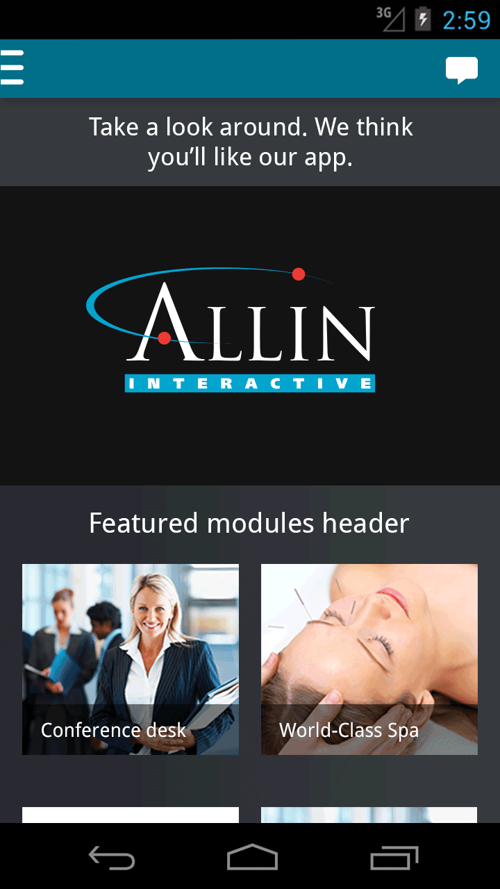
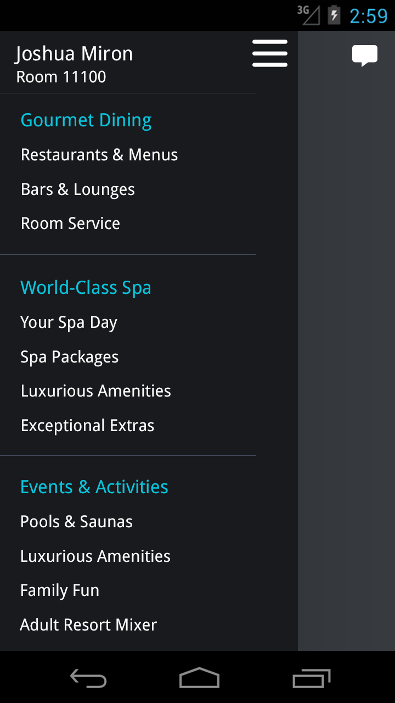
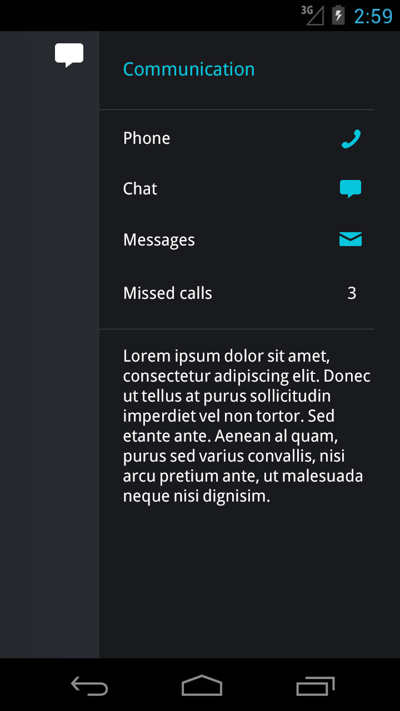
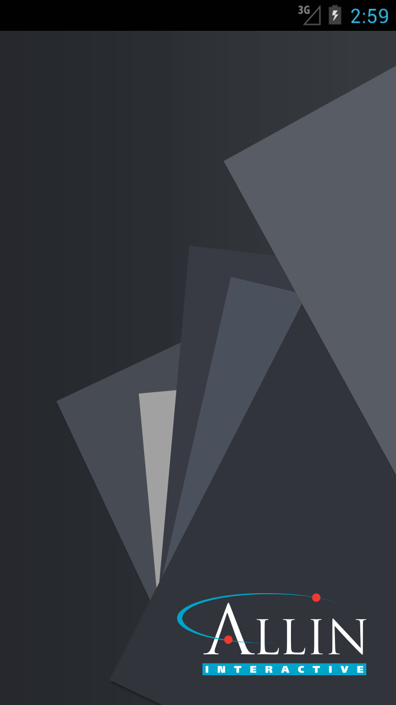
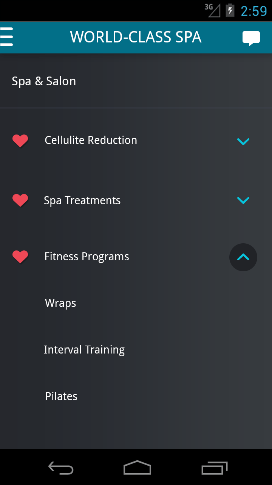
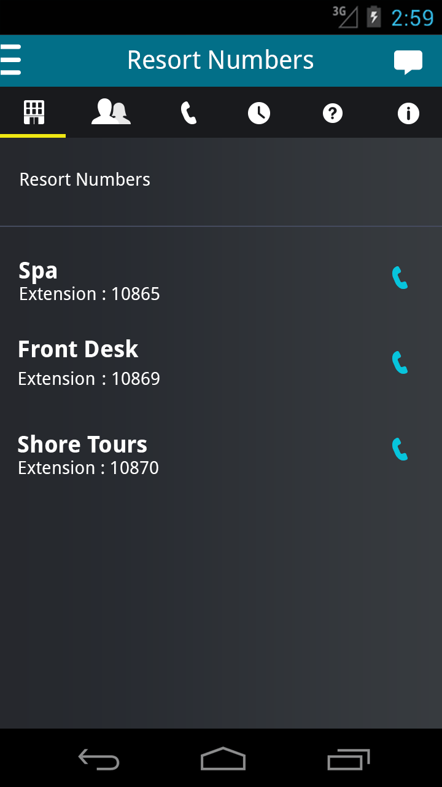
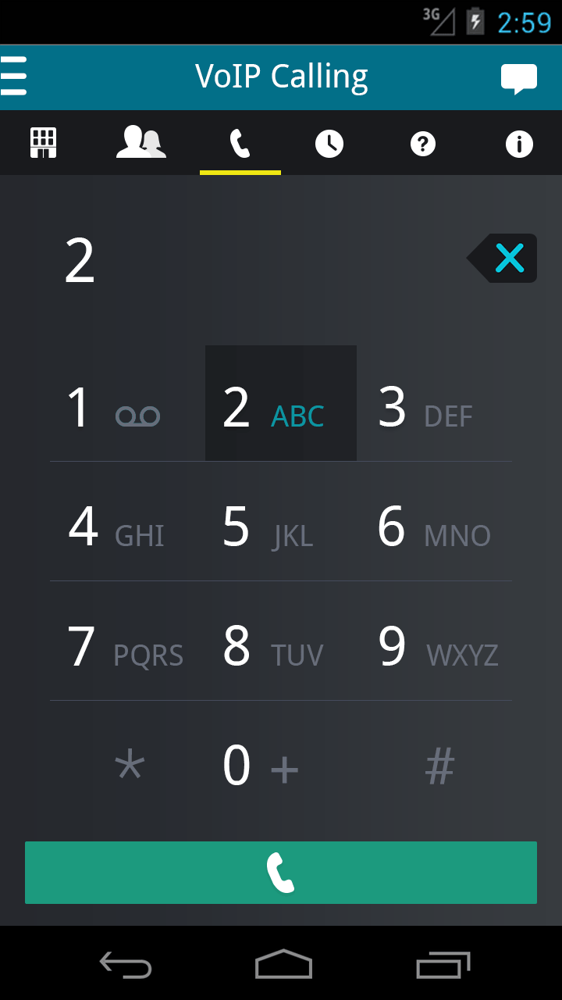
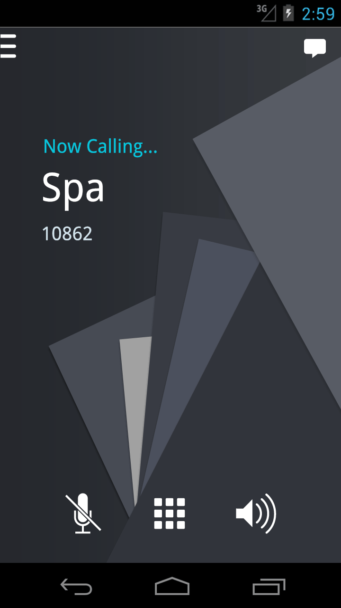

Material interface design
Designed a custom Material Design based visual skin for an internal sales and client-facing prototype platform. Focused on visual clarity, brand adaptability, and front-end feasibility to support rapid demos, stakeholder presentations, and iterative product conversations across hospitality and entertainment clients.
8 screens below
Screens







